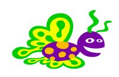
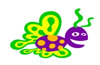

Leximi i pozicionit të mouse¶
Në PyGame, ekziston një mënyrë e thjeshtë për të lexuar gjendjen aktuale të mouse. Të dhënat për të cilat ne zakonisht interesohen më shumë janë pozicioni i mouse dhe butonat që shtypen. Në këtë mësim do të përdorim leximin e pozicionit të mouse, dhe në butonat e mouse tjetër. Përveç pozicionit dhe shtyp butonin, ka informacione të tjera rreth mouse që mund të marrim, por ne nuk do ta bëjmë atë këtu. Të interesuarit mund të gjejnë më shumë detaje për shembull këtu <https://www.pygame.org/docs/ref/mouse.html> __.
Ne mund të marrim pozicionin e mouse duke thirrur funksionin pg.mouse.get_pos (), i cili kthen një palë të koordinatave të porositura të pikës në të cilën ndodhet kursori i mouse.
Siç do ta shohim në shembujt dhe detyrat që vijojnë, përdorimi i këtij funksioni është shumë i thjeshtë, dhe ne mund të përdorim më tej pozicionin e leximit të mouse në mënyra të ndryshme.
Shembuj dhe detyra¶

Shembull - Një flutur ndjek mouse:
Në këtë shembull, ne ngarkojmë dy imazhe fluturash dhe i shfaqim ato në mënyrë alternative, siç bëmë në animacione. Ajo që është e re është se aty ku tregojmë flutur përcaktohet nga pozicioni i mouse që kemi marrë nga funksioni pg.mouse.get_pos().
 

{kind=link}
Me siguri keni vërejtur që kur lëvizni mouse më shpejt, flutura mbetet pak mbrapa. Kjo ndodh sepse vetëm 5 korniza shfaqen në sekondë, kështu që vonesa mund të jetë deri në 0.2 sekonda.
Kjo vonesë eliminohet lehtësisht duke rritur shkallën e kornizës (duke treguar më shumë korniza në sekondë), por më pas imazhet ndizen shumë shpesh dhe flutura i rrah krahët shumë shpejt. Zgjidhja është të rritet niveli i kornizës, ndërsa shfaqni secilin imazh gjatë kornizave të shumta.
Detyrë - lëviz shpejt, përplas ngadalë:
Kopjoni programin e mëparshëm këtu, pastaj modifikoni atë në mënyrë që flutura të mos mbetet prapa mouse ndërsa shpejtësia e fluturimit mbetet e njëjtë.
Këshillë: në mënyrë që flutura të mos mbetet, sigurisht që kemi nevojë për më shumë korniza për sekondë, për shembull n herë më shumë. Kjo do të thotë që funksioni new_frame quhet n herë më shpesh se më parë. Për të ruajtur të njëjtën shpejtësi të goditjes, çdo imazh duhet të shfaqet n herë më gjatë, domethënë gjatë n kornizave të njëpasnjëshme.
Detyrë - drejt mouse: Shkruaj një program në të cilin një top i gjelbër po lëviz drejt mouse, si në shembullin (butoni “Luaj lojën”).
Ndihmë: Në këtë detyrë pika kryesore është se si ndryshojnë koordinatat \((x, y)\) e qendrës së topit. Në një situatë si ajo në figurë, ne duam të rrisim x me dx dhe y nga dy. Në varësi të mënyrës sesi duam që topi të lëvizë, vlerat dx, dy mund të llogariten në mënyra të ndryshme. Një mënyrë e thjeshtë është të zgjidhni \(dx = {1 \over 10} (xm - x), dy = {1 \over 10} (ym - y)\).

Detyrë - drejt miut me gjurmë: Kopjoni programin e mëparshëm dhe modifikojeni në mënyrë që topi të lëshojë një gjurmë gri, si në shembullin (butoni “Luaj lojën”).
Ndihmë: Lëvizja e topit është e njëjtë si në shembullin e mëparshëm. Për të bërë një gjurmë, duhet të ruajmë një listë të disa pozicioneve të mëparshme (kemi përdorur 20) të topit.
Kur llogaritim një gjendje të re, ne shtojmë pozicionin më të fundit në listë, dhe nëse lista është bërë shumë e gjatë, ne fshijmë pozicionin më të vjetër.
Kur vizatojmë një gjurmë, për secilin rreth përdorim ngjyrën (shade, shade, shade), ku hija është e barabartë me 255 (e bardhë) para lakut, dhe në lak ajo zvogëlohet për një vlerë të caktuar, në mënyrë që në kalimin e fundit lak ajo bëhet zero (black), ose sa më afër zeros sa të jetë e mundur.
Kështu, për shembull, nëse lista quhet trace, këto ose deklarime të ngjashme duhet të shfaqen në programin tuaj:
trace = []
...
def new_frame():
...
trace.append((x, y))
...
if ...
trace = trace[1:]
Më në fund, mund të provoni dy programet e mëposhtme dhe të luani me ta.
Për të bërë programe si këto, përveç teknikave të programimit të paraqitura këtu, duhet një njohuri e fizikës (forca elastike, ligji i dytë i Njutonit) dhe matematika (teorema e Pitagorës). Shikoni programet pa pasur nevojë t’i kuptoni plotësisht ato. Nëse ju pëlqen, provoni të modifikoni pak disa konstante, kështu që mund të shihni se si kjo ndikon në sjelljen e programit.
Shembull: Yо-yо
Shembull: Sytë
Ky program kërkon gjithashtu pak më shumë njohuri për matematikën, kështu që ne nuk do të hyjmë në detaje. Nëse jeni të interesuar se si funksionon ky program dhe jeni mirë në matematikë, përpiquni të kuptoni detajet me ndonjë ndihmë.